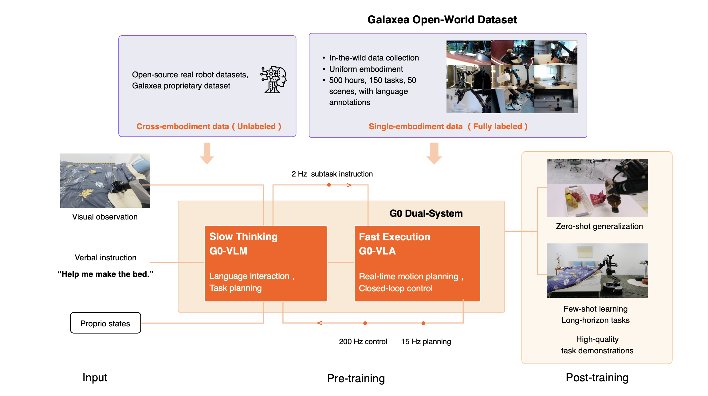
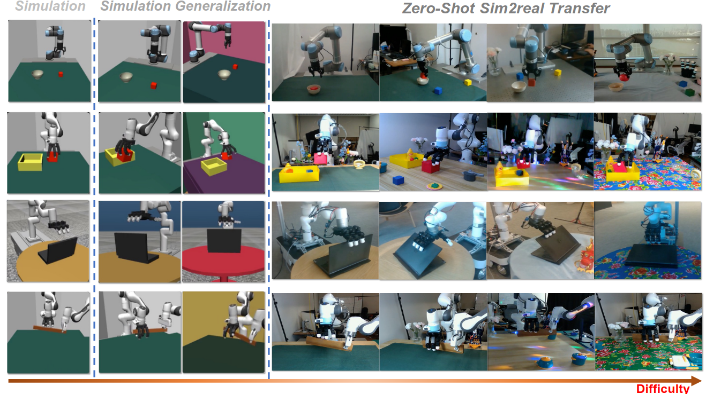

I am an Engineer at EngineAI, working on robot foundation models for whole-body manipulation. My work focuses on designing and building scalable robot learning systems, spanning large-scale pretraining, data pipelines, and real-world deployment.
Previously, I was a Research Intern at the Shanghai Qi Zhi Institute, where I was fortunate to be advised by Prof. Huazhe Xu and Dr. Zhecheng Yuan.
Publications
Papers sorted by recency. Representative papers are highlighted.

